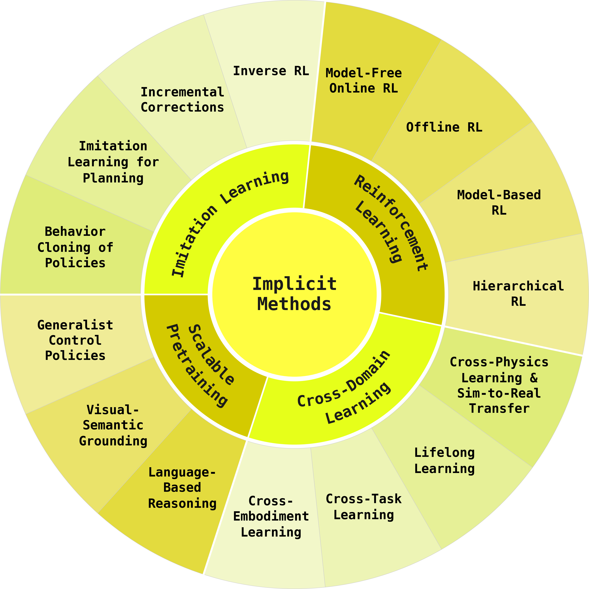
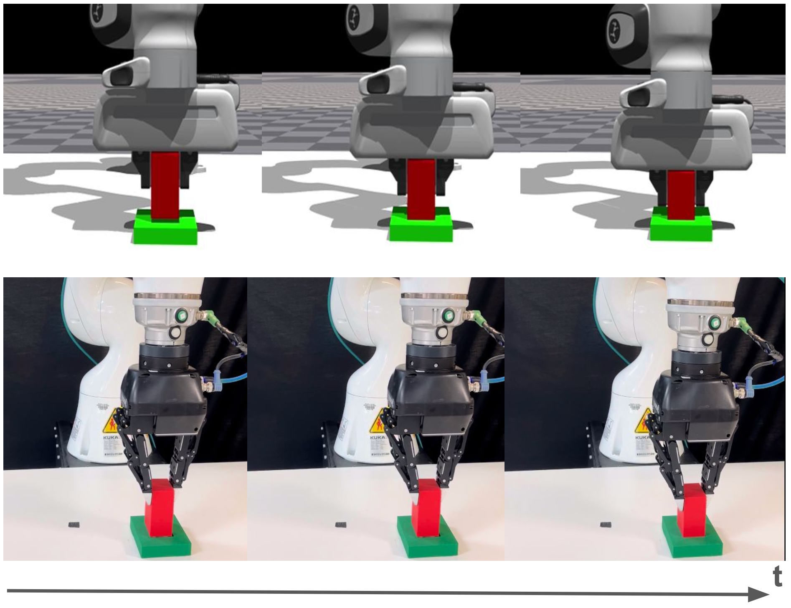
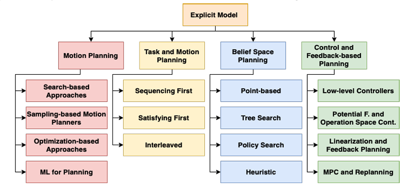
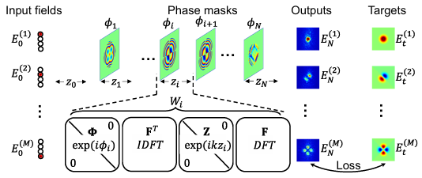

PhD Student · Rutgers University, New Brunswick · jhd79@scarletmail.rutgers.edu
I am a PhD student in Computer Science at Rutgers, advised by Professor Kostas Bekris. I am interested in solving difficult robot manipulation problems for practical deployment. I am invested in the direction of robot learning to address these problems, specifically reinforcement learning as it is a compelling path toward scalable robot behavior generation.
Joe H. Doerr, (other authors order TBD), Kostas E. Bekris

Joe H. Doerr*, Patrick Meng*, Sumanth Tangirala*, Kostas E. Bekris

Isidoros Marougkas*, Dhruv Metha Ramesh*, Joe H. Doerr, Edgar Granados, Aravind Sivaramakrishnan, Abdeslam Boularias, and Kostas E. Bekris

Kostas E. Bekris, Joe H. Doerr, Patrick Meng, Sumanth Tangirala

Zheyuan Zhu, Joe H. Doerr, Guifang Li, Shuo Pang